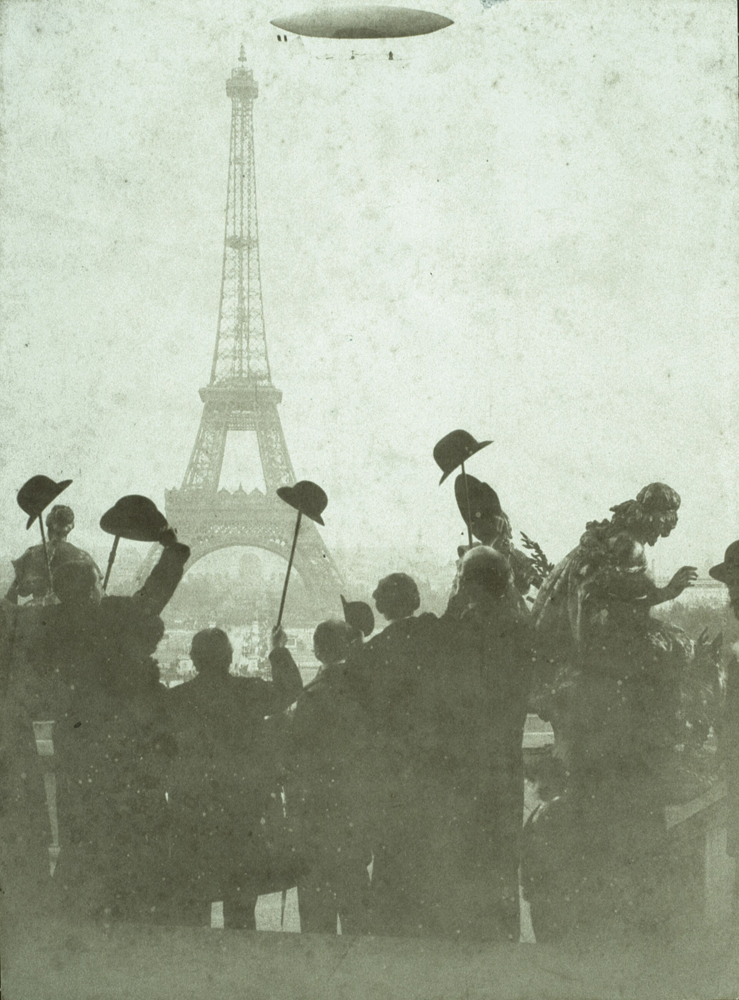
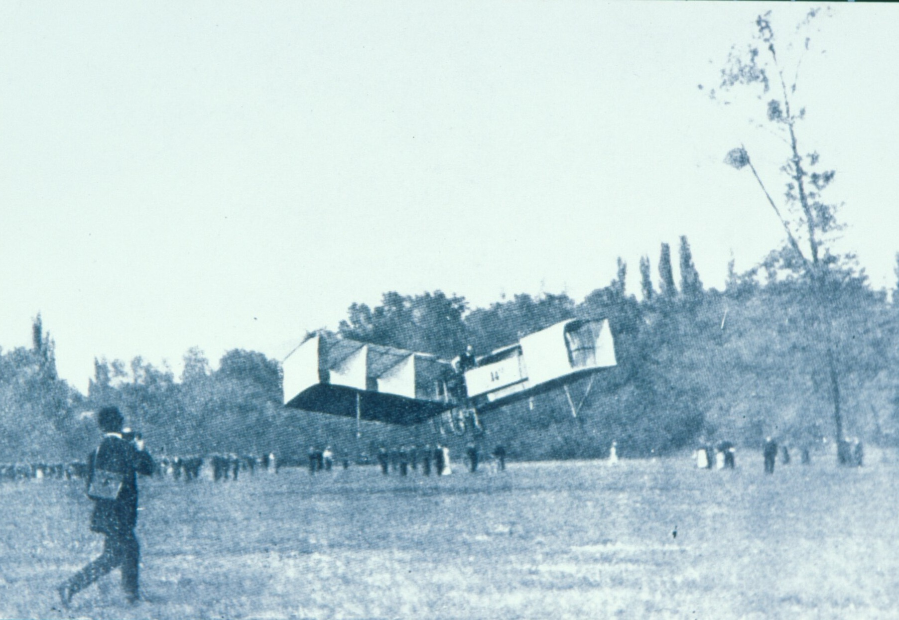
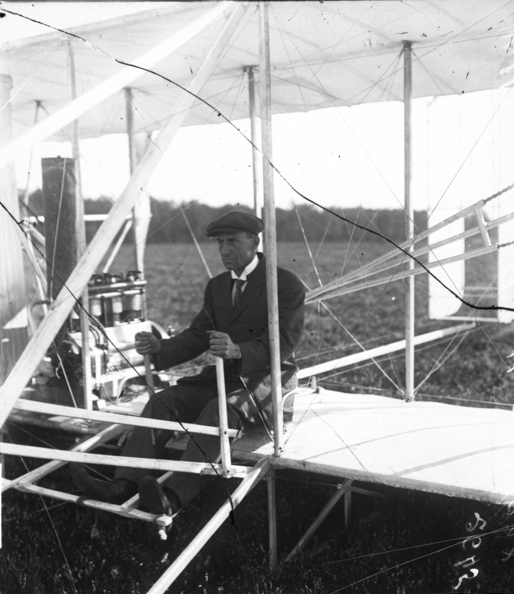

[하늘길, 항공③] 키티호크의 260m와 바가텔의 220m, 라이트 형제와 산투스 뒤몽의 「최초」 논쟁
1903년 키티호크 레일 비행과 1906년 바가텔 공식 관측 비행
120년 뒤 브라질 상원이 다시 기린 14-비스
AI경제저널=김갑봉 기자 | 2026년 10월 21일 브라질 상원은 특별 회의에서 14-비스 첫 비행 120주년을 기렸다. 산투스 뒤몽의 14-비스는 1906년 10월 23일 파리 바가텔 들판에서 60m를 날아 25m 비행에 걸린 상을 받았다(브라질 상원·미국 비행100주년위원회).
누가 처음 날았느냐는 물음에는 두 날짜가 맞선다. 미국 연방법은 라이트 형제가 키티호크에서 처음 난 12월 17일을 라이트 형제의 날로 정했다(미국 연방법전).
에펠탑을 돈 브라질 청년의 6호 비행선
알베르투 산투스 뒤몽은 1873년 7월 20일 브라질에서 태어났다. 1892년 파리로 건너간 그는 처음에는 비행기가 아니라 기구와 비행선에 매달렸다(상파울루대 연구진).
프랑스 항공클럽은 생클루를 떠나 에펠탑을 돌고 30분 안에 돌아오는 비행선에 10만프랑을 주는 도이치 드 라 뫼르트 대상을 열었다. 산투스 뒤몽은 길이 33m에 20마력 엔진을 단 6호로 1901년 10월 19일 이 상을 받았다(상파울루대 연구진).
그는 상금 절반은 조수들에게, 절반은 파리의 가난한 이들에게 나눠 줬다. 비행선으로 이름을 얻은 그는 1904년 말부터 공기보다 무거운 동력 비행기를 궁리했다. 1906년 8월에는 14-비스를 바가텔 들판에서 시험하기 시작했다(상파울루대 연구진).

제 바퀴로 떠오른 바가텔의 220m
프랑스 항공클럽은 1905년 말 평지에서 제 힘으로 떠올라 100m를 나는 첫 비행기에 1500프랑을 걸었다. 항공클럽의 에르네스트 아르슈데아콩은 25m 비행에 3000프랑을 따로 내걸었다(상파울루대 연구진).
14-비스는 1906년 9월 7일 시험에서 처음 땅을 떴고 9월 13일 관중 앞에서 짧게 날았다. 그날 거리는 상파울루대 연구진이 13m, 미국 비행100주년위원회가 7m로 적었다(상파울루대 연구진·미국 비행100주년위원회).
10월 23일 14-비스는 약 3m 높이로 날아 이륙 지점에서 60m 떨어진 곳에 내렸다. 아르슈데아콩이 환호하는 군중과 함께 그에게 달려왔다(상파울루대 연구진).
11월 12일 항공클럽 상을 노린 공식 도전의 네 번째 비행에서 14-비스는 맞바람을 안고 빠르게 떠올랐다. 약 6m 높이로 220m를 날았고, 비행시간은 국제항공연맹이 21.5초, 상파울루대 연구진이 22초로 적었다(국제항공연맹·상파울루대 연구진).

나무 레일 위 엔진으로 뜬 1903년 플라이어호
날짜로는 1903년 12월 17일 키티호크에서 네 차례 난 라이트 형제가 3년 가까이 앞선다. 윌버가 조종한 마지막 비행은 59초 동안 852피트(약 260m)를 날았다. 근처 인명구조대원들이 비행을 지켜봤다(스미스소니언 국립항공우주박물관·미국 국립공원관리청).
형제가 키티호크를 고른 것은 너른 모래땅에 바람이 세고 고르게 불었기 때문이다. 1903년 12월 17일 플라이어호는 시속 43㎞ 맞바람을 안고 엔진을 돌린 채 18m 나무 레일을 따라 미끄러져 떠올랐다(스미스소니언 국립항공우주박물관·미국 국립공원관리청).
1905년 형제의 비행기는 39분 동안 39.4㎞를 날았다. 형제는 특허 보호 없이 기술을 드러내지 않으려 했고 계약 전에는 비행을 보여 주지 않았다. 1906년과 1907년에는 날지 않았다(스미스소니언 국립항공우주박물관·미국 비행100주년위원회).
의심을 걷어 낸 1908년 위노디에르 경마장
프랑스에서는 샤누트의 엉성한 설명만 보고 라이트 글라이더를 흉내 낸 기체들이 시원찮게 날았다. 유럽에는 형제의 성과를 믿지 못하는 이가 늘었다. 1906년 뉴욕헤럴드는 형제를 두고 「비행사이거나 거짓말쟁이」라고 썼다(스미스소니언 국립항공우주박물관).
1908년 8월 8일 윌버 라이트는 르망의 위노디에르 경마장에서 유럽 첫 공개 비행에 나섰다. 프랑스 비행가 레옹 들라그랑주는 「우리는 졌다」고 말했다(스미스소니언 국립항공우주박물관).
스미스소니언은 르망 비행들이 라이트 형제의 주장을 의심할 여지 없이 입증했고 형제를 하룻밤 새 세계적 명사로 만들었다고 적었다. 계약 전까지 미뤄 온 공개 비행이 의심을 걷어 낸 셈이다.

날짜의 최초와 공인의 최초
산투스 뒤몽을 먼저로 보는 쪽은 이륙 방식과 공식 관측을 든다. 상파울루대 연구진은 14-비스를 제 힘으로 떠올라 25m 넘게 난 첫 유인 비행기로 정리했다. 국제항공연맹은 11월 12일 비행을 유럽에서 공식으로 지켜본 첫 25m 이상 비행으로 기록한다(상파울루대 연구진·국제항공연맹).
라이트 형제를 먼저로 보는 쪽은 날짜와 조종을 든다. 스미스소니언은 1903년 플라이어호를 조종사를 태운 첫 성공한 동력 비행기로 소개한다. 다만 그 플라이어호는 넷째 비행 뒤 돌풍에 뒤집혀 크게 부서졌고 다시 날지 못했다(스미스소니언 국립항공우주박물관·미국 국립공원관리청).
상파울루대 계산으로 14-비스는 앞뒤로 겨우 안정적이었고 좌우로는 불안정했다. 복제기는 곧게 날 때 조종이 쉬웠지만 옆바람에서는 조종을 잃을 수 있었다. 14-비스는 220m 비행 뒤 한 번 더 날다 크게 부서졌고, 산투스 뒤몽은 고치지 않았다(상파울루대 연구진).
브라질은 1984년 법률 제7243호로 산투스 뒤몽을 브라질 항공의 상징 인물(파트로누)로 선포했다. 2006년에는 조국의 영웅에 올렸다(브라질 대통령실·브라질 상원).
라이트 형제는 조종하는 비행기를 먼저 만들었고 산투스 뒤몽은 공식 관측 아래 제 바퀴로 뜨는 비행을 먼저 보였다. 한쪽은 특허와 계약을 얻을 때까지 공개를 미뤘고 다른 쪽은 군중 앞에서 날았다. 하늘길의 첫 장은 한 사람의 기록이 아니라 두 잣대가 겨룬 이야기인 셈이다.
참고문헌
- P. Greco·F. Catalano(상파울루대 항공역학연구소), "Historical Review and Analysis of Santos Dumont S 14-BIS", 『1st CEAS European Air and Space Conference』 CEAS-2007-065, 2007, 1429~1434쪽. https://www.fzt.haw-hamburg.de/pers/Scholz/ewade/2007/CEAS2007/papers2007/ceas-2007-065.pdf
- Senado Federal, "Senado faz homenagem ao primeiro voo do 14-Bis e ao Dia da Força Aérea Brasileira", Agência Senado, 2026년 10월 21일. https://www12.senado.leg.br/noticias/materias/2026/10/21/senado-faz-homenagem-ao-primeiro-voo-do-14-bis-e-ao-dia-da-forca-aerea-brasileira
- Senado Federal, 「Requerimento nº 399, de 2026」(14-비스 첫 비행 120주년 특별 회의, 2026년 10월 21일 개최). https://www25.senado.leg.br/web/atividade/materias/-/materia/174282
- Presidência da República, 「Lei nº 7.243, de 6 de novembro de 1984」. https://www.planalto.gov.br/ccivil_03/leis/1980-1988/L7243.htm
- U.S. Government Publishing Office, 「United States Code Title 36 §143 Wright Brothers Day」(2023년판). https://www.govinfo.gov/content/pkg/USCODE-2023-title36/html/USCODE-2023-title36-subtitleI-partA-chap1-sec143.htm
- Fédération Aéronautique Internationale, "12 November 1906: The first flight by Santos-Dumont", 2016년 11월 12일. https://www.fai.org/news/12-november-1906-first-flight-santos-dumont
- Smithsonian National Air and Space Museum, "1903 Wright Flyer"(소장품 A19610048000). https://airandspace.si.edu/collection-objects/1903-wright-flyer/nasm_A19610048000
- Smithsonian National Air and Space Museum, "You Just Invented the Airplane, Now What?", 2022년 12월 19일. https://airandspace.si.edu/stories/editorial/you-just-invented-airplane-now-what
- Smithsonian National Air and Space Museum, "On This Day: Wilbur Wright Flies in Europe", 2016년 8월 8일. https://airandspace.si.edu/stories/editorial/day-wilbur-wright-flies-europe
- U.S. National Park Service, Wright Brothers National Memorial, "1903-The First Flight". https://home.nps.gov/wrbr/learn/historyculture/thefirstflight.htm
- U.S. National Park Service, Wright Brothers National Memorial, "Getting Off the Ground". https://www.nps.gov/places/7-getting-off-the-ground.htm
- U.S. Centennial of Flight Commission, "Europe Spreads Its Wings"(1906). https://centennialofflight.net/essay/Wright_Bros/1906/WR9.htm
- U.S. Centennial of Flight Commission, "The Wright Brothers and the Invention of the Airplane". https://www.centennialofflight.net/essay/Wright_Bros/WR_OV.htm
[사진 출처]
- [사진1] José Rosael·Hélio Nobre 복제 촬영, "Contorno da Torre Eiffel com o Dirigível Nº6 - 1-13655-0000-0000, Acervo do Museu Paulista da USP", 상파울루대 파울리스타 박물관 산투스 뒤몽 컬렉션, 위키미디어 공용, 퍼블릭 도메인. https://commons.wikimedia.org/wiki/File:Contorno_da_Torre_Eiffel_com_o_Dirig%C3%ADvel_N%C2%BA6_-_1-13655-0000-0000,_Acervo_do_Museu_Paulista_da_USP.jpg
- [사진2] José Rosael·Hélio Nobre 복제 촬영, "Santos Dumont decola com o 14-bis, Campo de Bagatelle, Paris - 1-13802-0000-0000, Acervo do Museu Paulista da USP", 상파울루대 파울리스타 박물관, 위키미디어 공용, 퍼블릭 도메인. https://commons.wikimedia.org/wiki/File:Santos_Dumont_decola_com_o_14-bis,_Campo_de_Bagatelle,_Paris_-_1-13802-0000-0000,_Acervo_do_Museu_Paulista_da_USP.jpg
- [사진3] Agence Rol, "Wilbur Wright, 11 août 1908 (à l'hippodrome des Hunaudières au Mans) - btv1b69110258", 프랑스국립도서관 갈리카, 위키미디어 공용, 퍼블릭 도메인. https://commons.wikimedia.org/wiki/File:Wilbur_Wright,_11_ao%C3%BBt_1908_(%C3%A0_l%27hippodrome_des_Hunaudi%C3%A8res_au_Mans)_-_btv1b69110258.jpg
관련기사
- [하늘길, 항공②] 안노네 장터의 천 주머니에서 베르사유의 양·오리·수탉까지, 1783년 열기구가 연 하늘길
- [하늘길, 항공①] 이카로스의 밀랍 날개에서 키티호크의 12초까지, 하늘을 꿈꾼 인류의 도전
저작권자 © AI경제저널 무단전재 및 재배포, AI학습 및 활용 금지